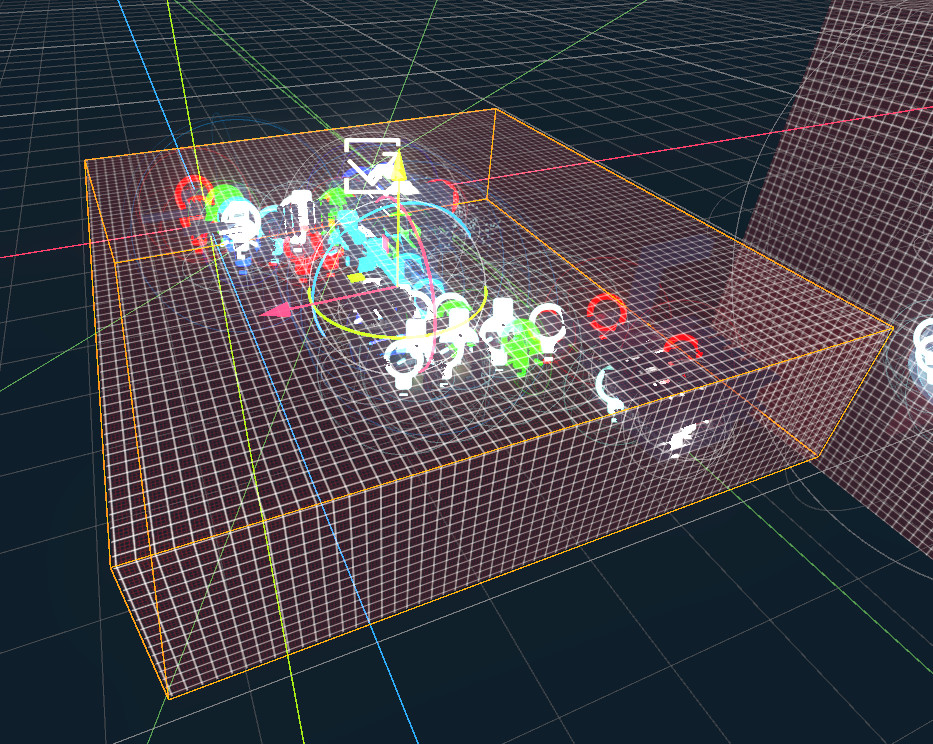

Module: location_chunk
Documentation last edited: October 23, 2025 at 14:33 UTC
Description
Location Chunk is a special node that takes a part of location and can optionally add/remove it to/from scene tree for optimization reasons.

You can use this node in your locations to partially remove chunks of the location OR remove entire sub-portions of it.
Properties of
LocationChunk
chunk_name
- Name of the chunk. It is used solely for in-editor naming, nothing more than that
start_hidden
- Whether this chunk should start in a hidden state
use_enclose
- Whether to use AABB enclosure test for node inclusion. On
false
uses simple intersection check that *may* include more than it should
use_distance
- Whether to use distance-based vibility control
check_dist_only_on_enters
- If true, only check distance when player enters/exits chunks
distance_n2
- Distance threshold squared for visibility (actual distance =
sqrt(distance_n2)
)
force_show_on_enter
- Whether to force showing this chunk when player enters
force_hide_on_exit
- Whether to force hiding this chunk when player enters
force_hide_chunks
- List of chunk names to force hide when this chunk is active
force_show_chunks
- List of chunk names to force show when this chunk is active
on_enter_events
- List of event names to fire when player enters this chunk
on_exit_events
- List of event names to fire when player exits this chunk
show_event
- Event name to trigger showing this chunk
hide_event
- Event name to trigger hiding this chunk
check_dynamic
- Whether to check for dynamic (
RigidBody
) nodes in this chunk
check_task_points
- Whether to check for task points in this chunk
check_NPCs
- Whether to check for NPCs in this chunk
update_ref_probe
- Whether to update reflection probe position when this chunk is shown
ref_probe_intensity
- Intensity to set for reflection probe when this chunk is shown
override_environment
- Whether to override the environment settings for this chunk
environment
- Environment to use when override_environment is true
editor_env
- Whether to apply editor-specific environment settings
override_LUT
- Whether to override the color grading LUT for this chunk
color_grading_LUT
- Color grading LUT path to use when override_LUT is true
This node serves as a replacement for outdated
. You can get the same functionality by simply using
LocationZone
node
force_show_on_enter
and
force_hide_on_exit
. It will have pretty much the same functionality, if not more, given the fact it is processing NPCs better.
General Information
Root directories list
docs, src
Nodes
Classes
Resources
None
Other Scripts
None